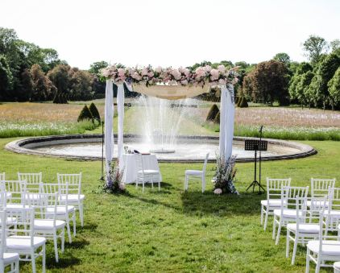

Chers fiancés,
Toutes mes félicitations pour votre projet de mariage. Vous vous apprêtez à vivre un moment sacré, un engagement profond l'un envers l'autre et devant Dieu. Il est naturel de souhaiter que votre cérémonie reflète la singularité de votre amour et la dimension spirituelle de votre union.
Ma vocation est de vous accompagner dans la préparation et la célébration d'une cérémonie de mariage chrétienne authentique et personnalisée, dans la tradition baptiste évangélique.
Un lieu chargé de sens. Un jardin enchanteur, un château historique, une grange de caractère, une chapelle traditionnelle… J'ai à cœur de pouvoir célébrer votre union dans le lieu qui vous est propre, celui où ce moment de votre histoire pourra pleinement résonner. Au préalable, nous nous rencontrerons à mon presbytère de Rhode-Saint-Genèse pour deux séances préparatoires.
Un cheminement vers votre grand jour.
Chaque couple est unique, et votre cérémonie se doit de l'être également. Un accompagnement basé sur l'écoute et la guidance vous est proposé :
- Une première rencontre pour faire connaissance. Le temps sera pris pour échanger au presbytère de Rhode-Saint-Genèse. Ce sera l'occasion de comprendre votre histoire, votre vision du mariage et de partager ensemble sur les valeurs et la richesse de l'engagement chrétien.
- Une seconde rencontre pour préparer la cérémonie. Le déroulement de votre célébration sera construit ensemble. Les textes bibliques, les prières et les musiques qui vous touchent seront choisis et une guidance vous sera offerte, si vous le souhaitez, dans la rédaction de vos vœux personnels.
- La célébration de votre mariage. Votre union sera célébrée avec chaleur et bienveillance dans le lieu que vous aurez choisi et qui a du sens pour vous.
- Un souvenir précieux. À l'issue de la cérémonie, un acte de mariage vous sera remis, qui sera précieusement consigné dans le Livre des Actes.
Forfait célébration.
Forfait Célébration à 850 € Afin que vous puissiez vous préparer en toute sérénité, l'accompagnement inclut les rencontres préparatoires (qui peuvent se faire par visioconférence si nécessaire), la création sur mesure de votre cérémonie, la présence et la célébration le jour J, ainsi que la délivrance de votre acte de mariage.
Au plus tard le jour du mariage Vous disposerez de vos copies de baptême (protestant, catholique ou orthodoxe) et de mariage civil.
À prévoir pour la cérémonie.
Pour le bon déroulement de la cérémonie, nous aurons simplement besoin de prévoir :
- Un témoin pour chaque fiancé
- Un ou plusieurs lecteurs pour les textes choisis
- La présentation de votre acte de mariage civil
- Un autel (ou une table) pour y déposer la Bible
- Une sonorisation pour la musique et les prises de parole
Une question ?
Pour toute demande particulière, rendez-vous sur la page de contact.
Et si votre choix est fait, pensez à réserver dès maintenant votre date de mariage ci-dessous.
Réserver votre date de mariage
🗓️ Je suis disponible les lundis, jeudis et samedis. Pour un autre jour, contactez-moi par téléphone.
Les rencontres préparatoires seront fixées ensemble par la suite.